Mini-Jeux
Application Python en terminal
Trois mini-jeux jouables en terminal, avec comptes joueurs, scores sauvegardés et bots.
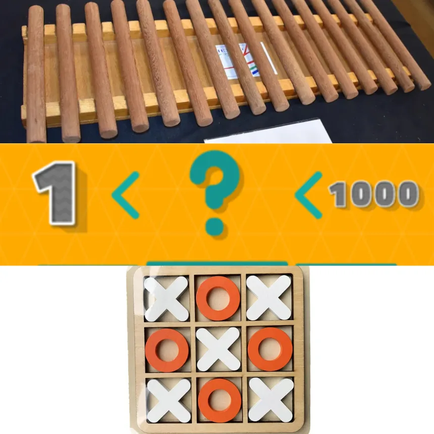
Contexte
Projet réalisé dans le cadre d'une SAE de 1ʳᵉ année du BUT Informatique. Objectif : développer une application Python en terminal regroupant plusieurs mini-jeux, avec gestion des joueurs, des scores et de la sauvegarde des données.
Objectifs
- Créer un système de connexion avec sauvegarde des joueurs.
- Développer trois mini-jeux jouables en terminal.
- Mettre en place un menu principal clair et interactif.
- Gérer les scores globaux et par jeu.
- Implémenter des bots pour jouer contre l'ordinateur.
- Créer des fichiers d'aide pour expliquer les règles.
Mon rôle
En binôme, j'ai principalement travaillé sur :
- la gestion des joueurs (création, connexion, stockage dans
joueurs.txt) ; - le menu principal et la navigation entre les jeux ;
- l'affichage des scores globaux et des scores par jeu ;
- le jeu des devinettes ;
- les fichiers d'aide ;
- les bots (mode joueur contre bot).
Les trois mini-jeux
Devinettes
Deviner un nombre choisi au hasard.
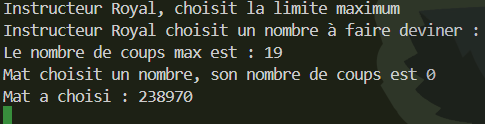
Allumettes
Éviter de prendre la dernière allumette.
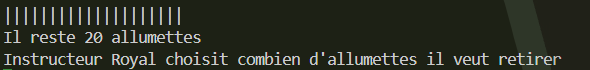
Morpion
Aligner trois symboles.
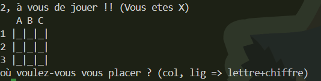
Fonctionnalités
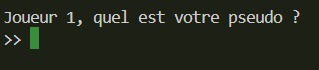
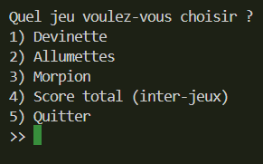
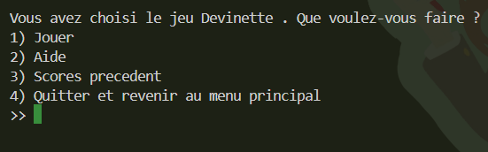
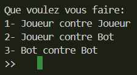
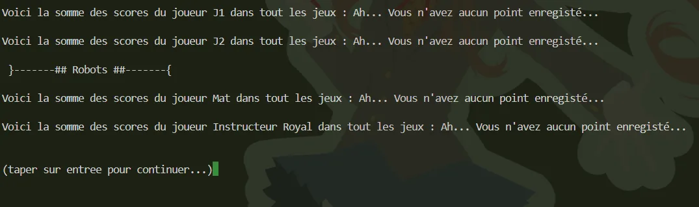
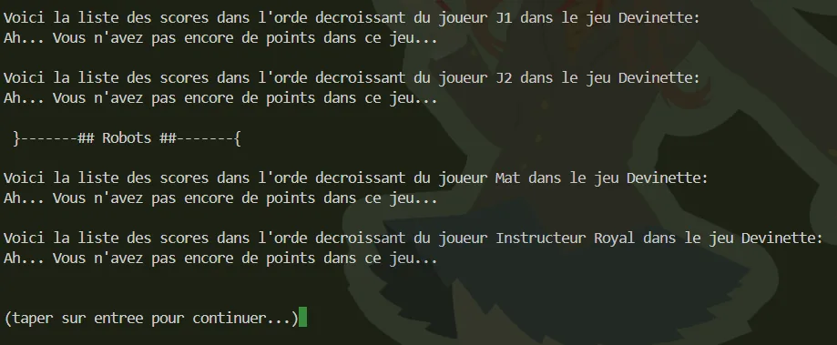
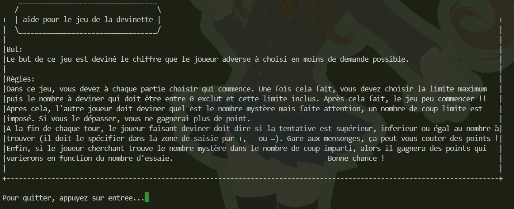
Livrables
- Application Python complète
- Gestion des joueurs et des scores
- Trois mini-jeux fonctionnels avec bots
- Fichiers d'aide
- Code commenté
Analyse réflexive
Ce projet m'a permis de renforcer ma maîtrise de Python, la gestion des fichiers, la structuration en modules et la création d'interfaces textuelles claires. La difficulté principale a été la sauvegarde des données et la navigation fluide entre les jeux. J'ai aussi appris à concevoir des bots simples et à rendre le code générique pour accueillir plusieurs jeux.
Pour les enseignants
Synthèse des compétences du BUT Informatique et des apprentissages critiques (AC) mobilisés dans ce projet.
Compétences mobilisées
-
C1 — Réaliser un développement d'application
Python, modularité, gestion de fichiers.
-
C2 — Optimiser des applications
Logique algorithmique, bots, gestion des essais.
-
C5 — Conduire un projet
Organisation en binôme.
-
C6 — Collaborer au sein d'une équipe
Communication, versioning.
Apprentissages critiques démontrés
| AC | Apprentissage critique | Compétence | Niveau | Ce que le projet démontre |
|---|---|---|---|---|
| AC11.01 | Implémenter des conceptions simples | C1 | BUT 1 | Les trois mini-jeux. |
| AC11.03 | Tester et évaluer les résultats | C1 | BUT 1 | Tests des jeux. |
| AC21.01 | Élaborer des spécifications | C1 | BUT 2 | Spécifications : gestion des joueurs et des scores. |
| AC21.03 | Adopter de bonnes pratiques | C1 | BUT 2 | Modularité du code Python. |
| AC21.04 | Valider par les tests | C1 | BUT 2 | Tests et correction des bugs. |
| AC16.04 | Travailler en équipe | C6 | BUT 1 | Travail en binôme. |
Traces disponibles
- Analyse réflexive — retour sur les difficultés et les apprentissages du projet.
- Code source sur GitHub ↗
- Captures d'écran et description des fonctionnalités dans les sections ci-dessus.
- Tableau récapitulatif de tous les AC du portfolio